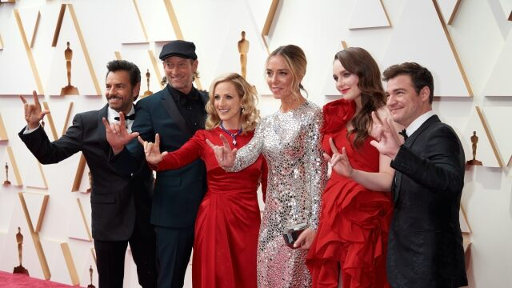
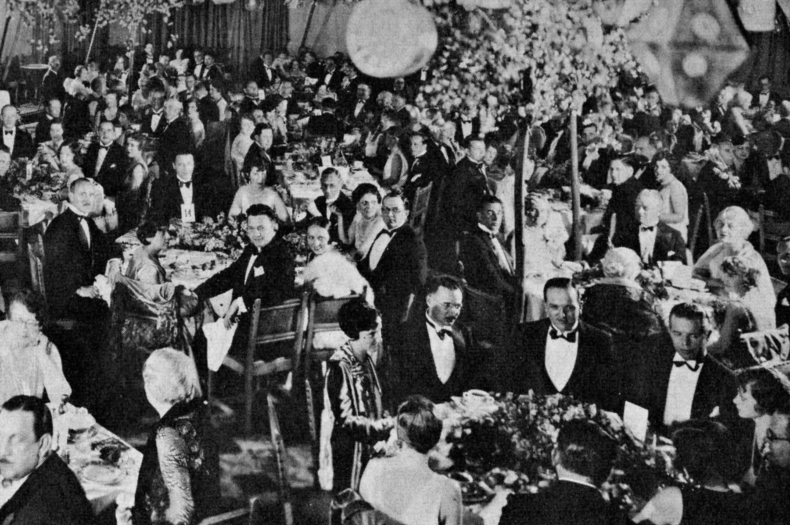
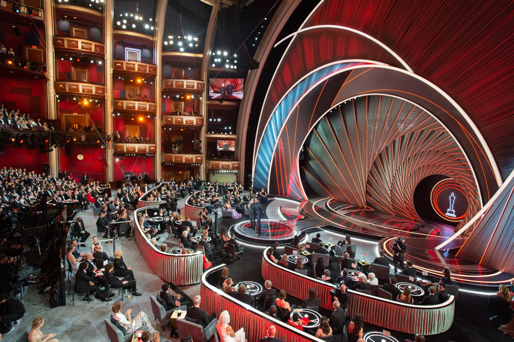

The Academy Awards
About the Awards
The Academy Awards, known as The Oscars, celebrate the entertainment industry through a wide variey of categories from acting to sound to costuming. The awards began in 1929 in front of a select audience before moving to broadcast radio in 1930 and television in 1953. The Oscars are the oldest of the the major entertainment awards and have presented a total of 3,140 awards.
First Academy Awards
The first Academy Awards were held on May 16th, 1929 in the Hollywood Roosevelt Hotel in Hollywood. At the show, there were 12 different categories to which awards were presented. The audience consisted of 270 industry professionals and the event was hosted by Douglas Fairbanks. The Best Picture winner was Wings directed by William A. Wellman. The Best Actress was Janet Gaynor who recieved the award for three different films, 1927's 7th Heaven and Sunrise: A Song of Two Humans as well as 1928's Street Angel. The first Academy Awards is the only time in which an actor or actress won a single Oscar for multiple different films. The Best Actor was Emil Jannings for 1927's The Way of All Flesh and 1928's The Last Command.
Most Recent Academy Awards
The first Academy Awards were held on March 27th, 2022 in the Dolby Theatre in Hollywood. At the show, there were 23 different categories to which awards were presented. The audience consisted of both industry professionals, fans, and nearly 16.6 million viewers from home. The event was hosted by Regina Hall, Amy Schumer, and Wanda Sykes. The Best Picture winner was CODA, directed by Sian Heder. The Best Actress was Jessica Chastain for her work in The Eyes of Tammy Faye and the Best Actor was Will Smith for his portrayal of Richard Williams in King Richard.
